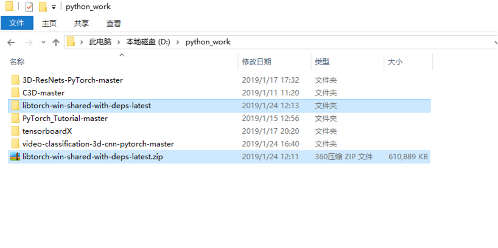
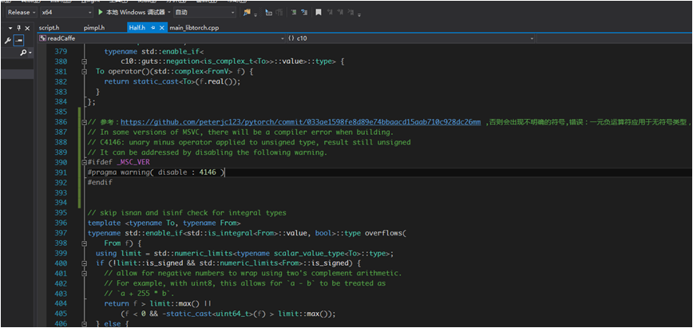
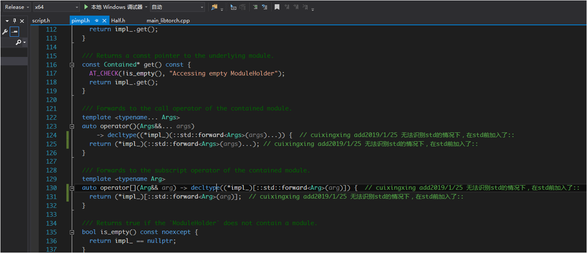
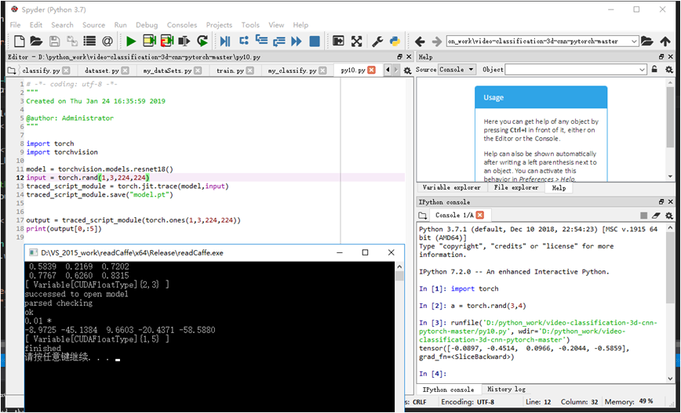

Pytorch能够非常方便的进行各种深度模型的搭建和实验，但在部署方面（C++环境下）仍然有很多坑需要踩，随着官方1.0的公布，越来越多的功能趋于完善稳定，为了能够独立在C++项目环境中使用pytorch，官方提供了Libtorch库，需要简单配置后可以非常方便的使用，现记录其配置过程，方便日后少踩坑再次使用。（官方提供的一个示例需要CMake编译源文件为项目文件然后使用，可参看我的上篇文章，本教程在上篇基础上无需编写CMakeLists.txt文件，可独立在VS中新建项目配置使用）
配置步骤
1、官方下载libtorch，找到适合自己的配置版本下载解压到一个固定英文路径（最好以后不要更改位置，因为以后可能会影响项目的打开），见Fig1所示:

打开解压的库，里面只有5个文件夹，如图Fig2所示。其中my_example是上篇文章中用CMake编译的测试文件，它会为VS项目自动查找相应的依赖库并且为其配置好。本次不会用到my_example文件里面任何东西。
2、现在正是开始进入配置环节了，新建一个VS项目工程，然后添加一个源文件进行使用，我的源文件是使用renet18()在pytorch中训练好后的模型model.pt在C++中调用。
源文件如下：
1 | // 项目中独立使用libtorch, 目前只适合release版本， |
项目属性页设置如下路径：
头文件包含：C:\Program Files\NVIDIA GPU Computing Toolkit\CUDA\v8.0\include
C:\Program Files\NVIDIA Corporation\NvToolsExt\include
D:\python_work\libtorch-win-shared-with-deps-latest\libtorch\include\torch\csrc\api\include
D:\python_work\libtorch-win-shared-with-deps-latest\libtorch\include
库路径：D:\python_work\libtorch-win-shared-with-deps-latest\libtorch\lib;
链接器，输入：D:\python_work\libtorch-win-shared-with-deps-latest\libtorch\lib\torch.lib
C:\Program Files\NVIDIA Corporation\NvToolsExt\lib\x64\nvToolsExt64_1.lib
C:\Program Files\NVIDIA GPU Computing Toolkit\CUDA\v8.0\lib\x64\cudart_static.lib
D:\python_work\libtorch-win-shared-with-deps-latest\libtorch\lib\caffe2_gpu.lib
D:\python_work\libtorch-win-shared-with-deps-latest\libtorch\lib\caffe2.lib
D:\python_work\libtorch-win-shared-with-deps-latest\libtorch\lib\c10_cuda.lib
D:\python_work\libtorch-win-shared-with-deps-latest\libtorch\lib\c10.lib
C:\Program Files\NVIDIA GPU Computing Toolkit\CUDA\v8.0\lib\x64\cufft.lib
C:\Program Files\NVIDIA GPU Computing Toolkit\CUDA\v8.0\lib\x64\curand.lib
C:\Program Files\NVIDIA GPU Computing Toolkit\CUDA\v8.0\lib\x64\cublas.lib
C:\Program Files\NVIDIA GPU Computing Toolkit\CUDA\v8.0\lib\x64\cublas_device.lib
以上路径实际上是参照上篇文章项目的属性页进行。
3、修改libtorch库的一些头文件，因为后续编译可能会出现一些错误。
Half.h 第386行修改如下Fig3：


另上面中使用的model.pt文件是如下pytorch导出的模型，见如下代码：
1 | import torch |
结果对比
pytorch和C++中运行结果对比如Fig5所示。
从中可以看出，经过模型输出结果一致！

Reference:
https://github.com/pytorch/pytorch/issues/15589
https://github.com/peterjc123/pytorch/commit/033ae1598fe8d89e74bbaacd15aab710c928dc26mm
https://github.com/pytorch/pytorch/issues/15497